Kaytrel Godoy
Hello,
My name is Kaytrel Godoy, and I am currently a first-year student at the University of California - Riverside. Although I am majoring in business administration, I am also fulfilling my pre-medicine prerequisites in order to be able to apply for medical school after I obtain my bachelors. Due to my interests in these respective fields, I have experience that pertains to both of these respective fields.
For four years, I was actively involved in Compact Club, which was a business
oriented group that focused on networking and developing interpersonal skills that would be transferable to various different jobs. Moreover, thanks to the Multiply Your Generosity scholarship contest held by the Steering Committee who sponsored the club, I was able to initiate two mini charities that fundraised for a local government hospital in the Philippines and Veronica’s Home of Mercy - a women’s shelter in San Bernardino. My first charity “Giving Change to Make a Change” was an independent, philanthropic project fueled by a rambunctious explosion of my creativity and zeal. On par with the insight I gained from job shadowing an obstetrician at a Philippine hospital, I grasped a sense of awareness-incited by the medical staff’s narratives regarding their adverse circumstances. This sympathy instigated a personal challenge of reaping superlative successes. Thus, procuring the results of an abundance of donations-over 100 scrubs and lab coats, an excess of 30 pounds of toiletries, a generous amount of medical supplies, and upwards of $750-became a testament to my toils. My second fundraiser was for Veronica’s Home of Mercy: a Catholic faith-based organization that focuses on providing temporary aid to mother’s and their children until they can support themselves as well as their families. My goal was to raise donations to make a care package for the mothers, which included bags, toiletries, and other assortments. I learned from my previous fundraiser, Giving Change to Make a Change, that the community is the most efficient resource. Moreover, I also garnered that raising money was not necessarily difficult, just time consuming. Thus, my approach was just to raise donations and utilize the community to make this OUR project.
For four years, I volunteered at the childcare of Family Service Association. For
a few days during the week for four years, I worked to manage this facility where I offered tutoring and supervision while parents took English language classes.Tutoring has demanded an immeasurable amount of patience and instigated me to hone analytical skills. In order for me to generate the most productivity with each student, it was paramount that I drew on my patience to derive a thorough comprehension of each individual. Typically, the subjects they struggled with were obvious, however, what required the most time was identifying why they grappled with it and how to help them efficiently. Due to my passion for children, I also volunteered at Excel as a tutor for three years where I assisted elementary students with their homework. This position also demanded consistent hours and ability to effectively communicate with both the student and the parents regarding what specifically they were struggling with and the part the parents needed to play in order to see consistent progress.
Experience
Tutor/Supervisor
• Assisted elementary and middle school students with their homework X
• Supervised children
• Tutored students on other subjects they were struggling with
Tutor
• Tutored students on subjects they struggled with
• Helped students with their homework
Volunteer
• Assisted nurses with tasks
• Assisted patients by caring for their needs
• Did inventory and restocking
• Delivered labs and other equipment
Creator of Two Charities
• Created "Giving Change to Make a Change" which fundrasied for a local government hospital in the General Santos City, Philippines
• Fundrasied for Veronica's Home of Mercy - a women's shelter in San Bernardino
Education
UC Riverside
Portfolio
 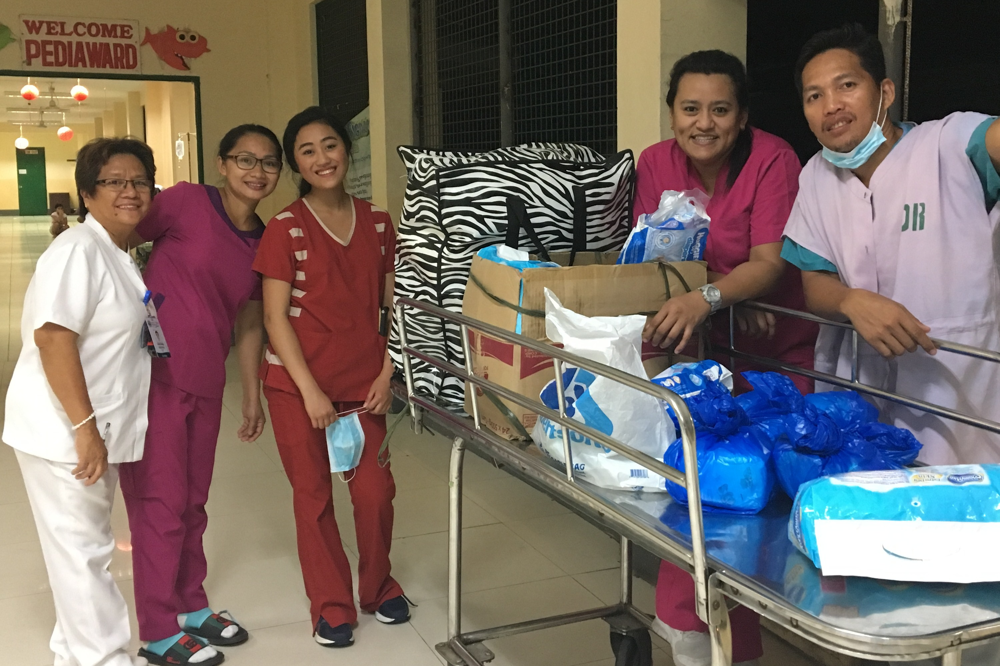
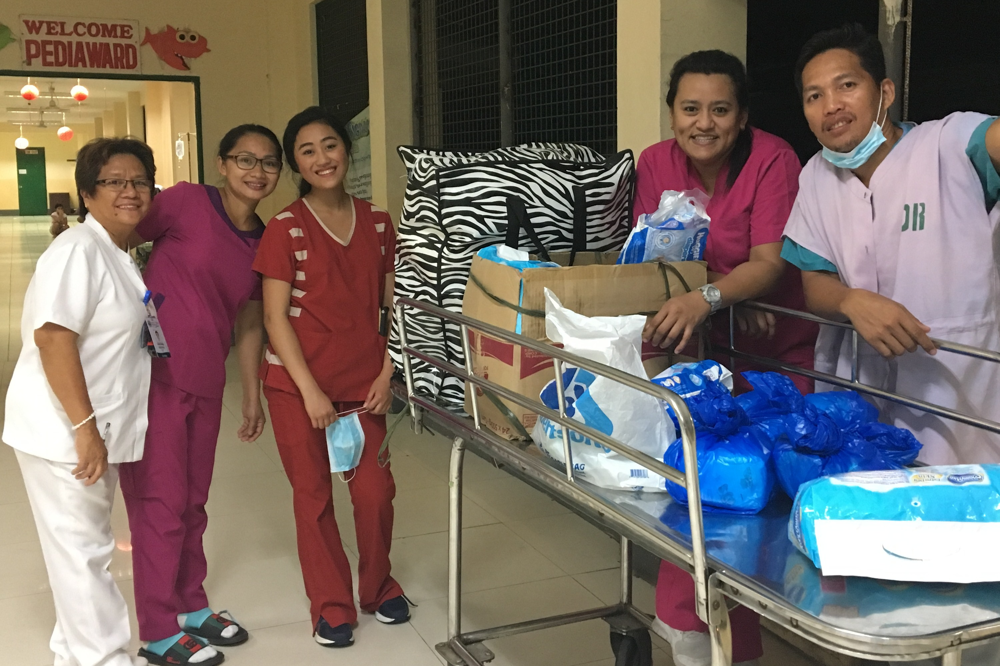
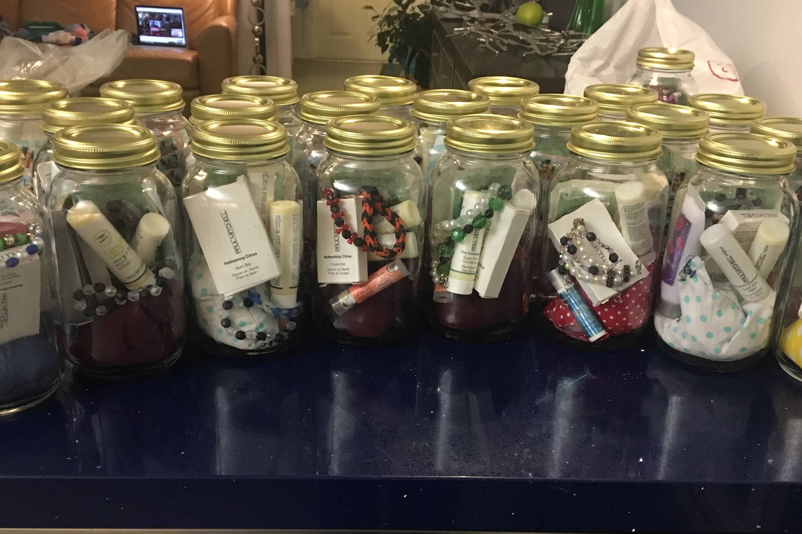
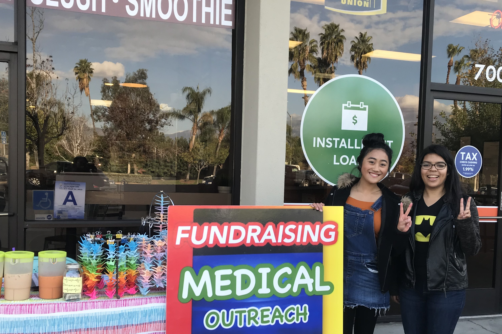
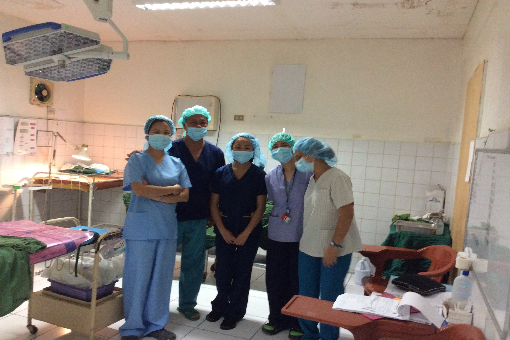
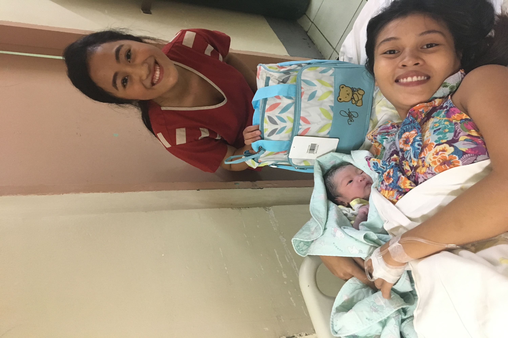
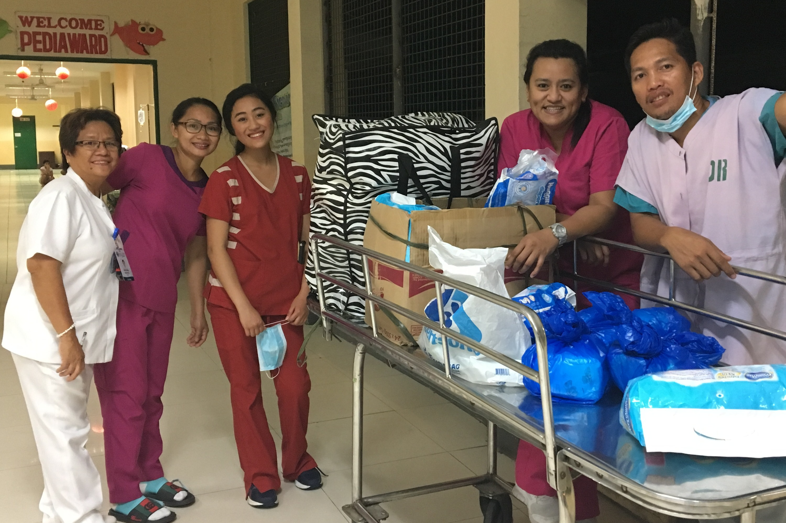
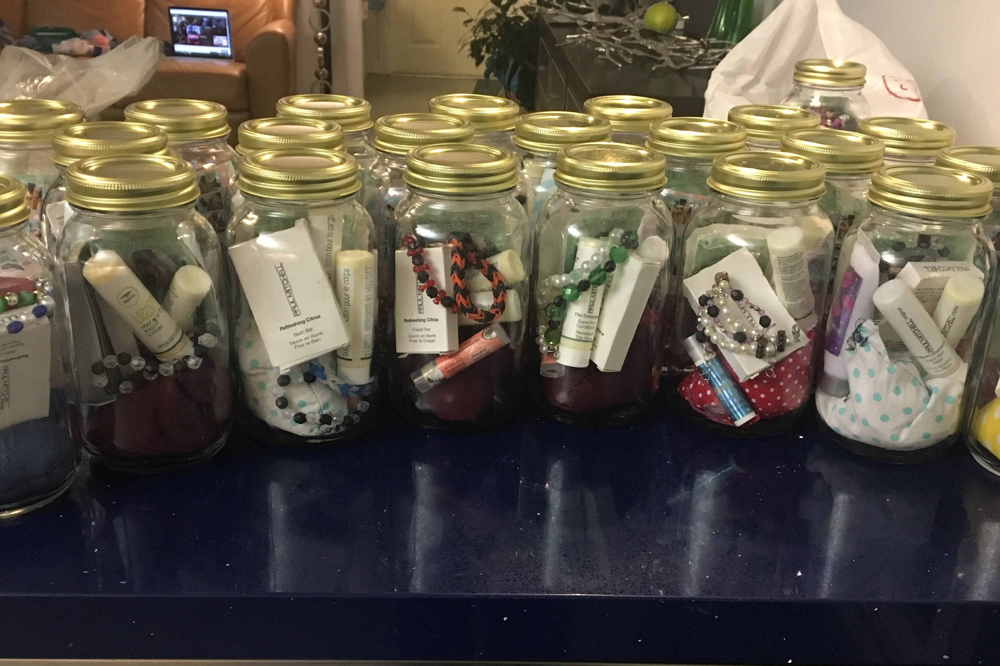 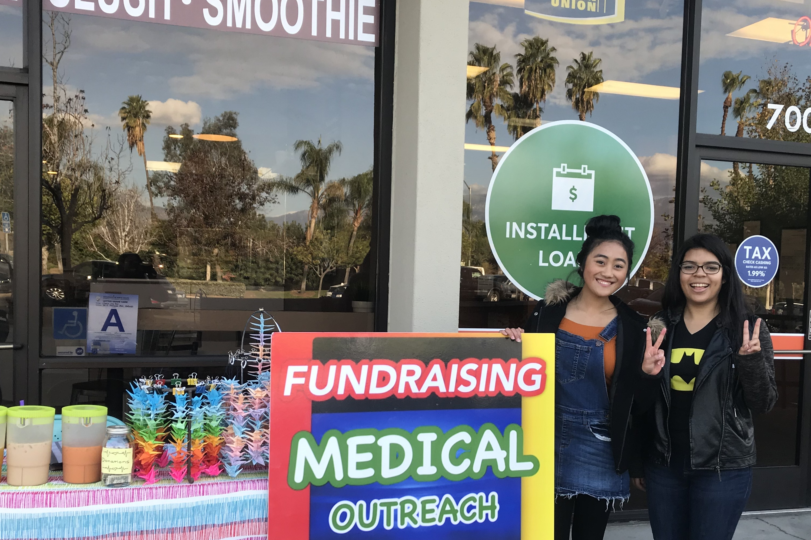
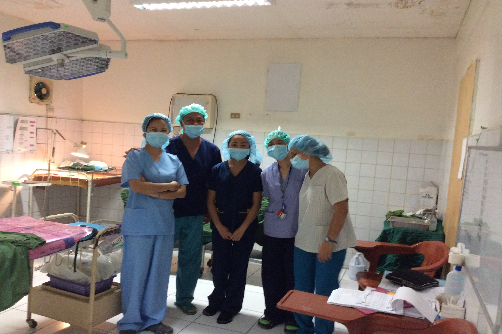 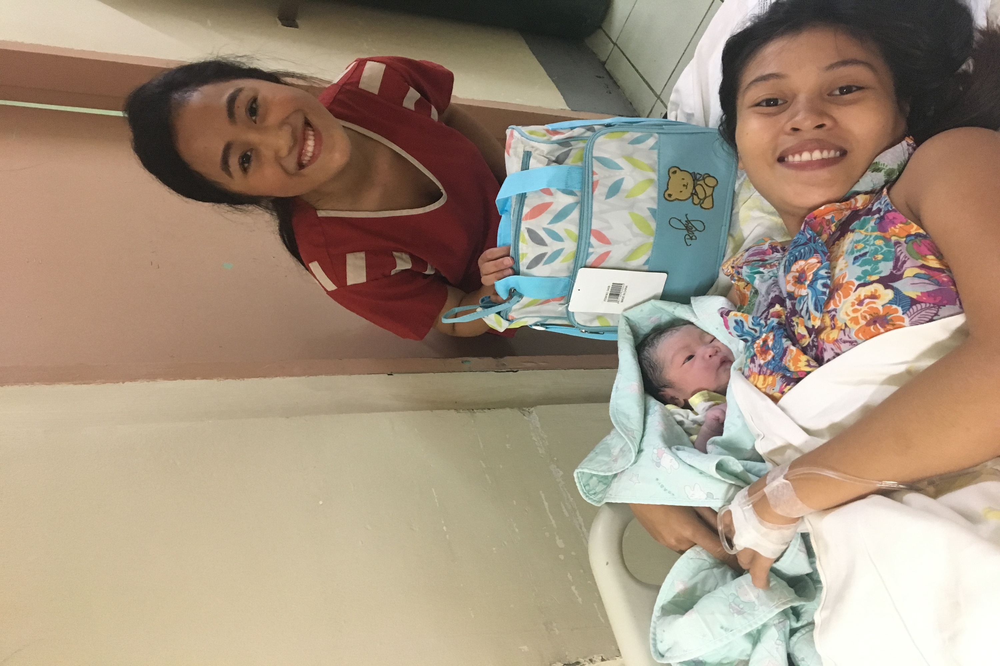